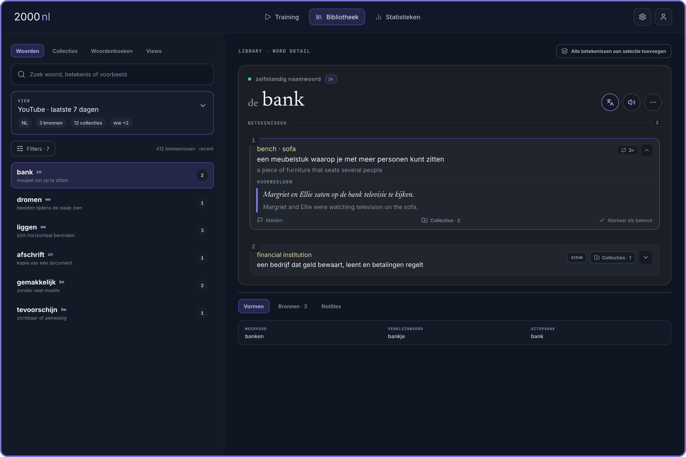

Лист 01. Answer: воздух вокруг слова и читаемый пример
Слева — настоящий экспорт 30.95.08, поверх нанесены размеры. Справа — те же номера, значения из Pen и предлагаемые изменения. Это обмер исходника, не новый экран приложения.
Остальная типографика: измерения, без дополнительных решений сегодня
| Роль | Шрифт | Размер | Вес | Строка | Примечание |
|---|
Высоты строк в px вычислены из заданных в Pen коэффициентов; итоговый рендер может округлять границы. «Не задан» не заменяем догадкой. Для 30.95.09 вложенные пояснения и примеры имеют 12/13 px; это отдельные роли, а не разрешение уменьшить любой основной пример.
Следующая приёмка: размеры большого экрана и зоны прокрутки
Breakpoint — ширина окна, после которой меняем компоновку. Здесь показан принцип, не утверждённый размер нового desktop. Исходный mobile — 402×874, карточка — 382×540. Отдельного утверждённого desktop Training из этих двух mobile-экранов получить нельзя.
по ширине
карточка в центре
В следующем кодовом образце я предложу и проверю конкретные ширину, высоту и пороги. Проверочные окна: 320, 402, 768 и 1440 px по ширине; короткая высота отдельно. Это размеры проверки, а не четыре автоматически выбранных breakpoint.
44×44 CSS px для зоны касания — предлагаемый ориентир; сама иконка может остаться 15 px. Нельзя просто расширить невидимые зоны так, чтобы они перекрыли друг друга. W3C: усиленный критерий; минимальный AA — 24×24 с исключениями.
Проверяем перекомпоновку при увеличении и пользовательские интервалы текста. Последнее не означает требование поставить всем строкам 1.5 по умолчанию. По картинке соответствие WCAG не подтверждается.
Word Details: найден точный 30.50.02, вашу логику сохранили для отдельного шага
cCXBF — основной двухколоночный экран. Повторяющиеся номера внутри других макетов относятся к его вложенным элементам, не к нескольким основным вариантам. Подпись в Pen: «IA ONLY · CARD USE 10.32.01» — берём организацию экрана, не устаревшую типографику всех его карточек.

Фиксированная верхняя часть; список слева и содержимое справа прокручиваются независимо. Vormen / Bronnen / Notities — дополнительная информация о выбранной словарной статье, а не новое значение. Формы общие для её значений; сведения, относящиеся только к одному значению, сохраняют эту привязку.
Совпадение написания и части речи само по себе не объединяет две разные словарные статьи. Сейчас данные Word Details привязаны к entryId, включая часть заметок. Перенос общей информации на уровень статьи — отдельная работа #70/#84/#252, не побочный эффект исправления отступов.